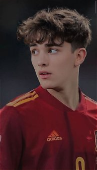
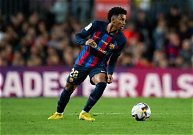
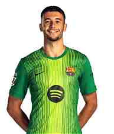
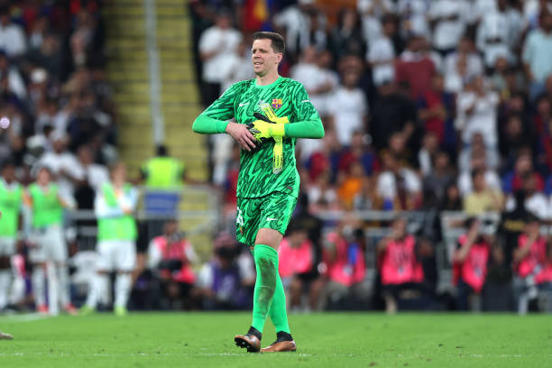
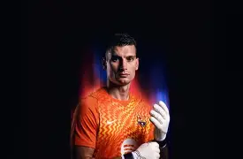

⚡ Atacantes
 LY
LYLamine Yamal Nasraoui Ebana
Extremo derechoNacimiento: 13/07/2007
Lugar: Esplugues de Llobregat, España
Nacionalidad: España
Altura: 1,83 m
Peso: 72 kg
Posición: Delantero / Extremo derecho
Cargando desde SportScore...
 R
RRaphael Dias Belloli "Raphinha"
Extremo izquierdoNacimiento: 14/12/1996
Lugar: Porto Alegre, Brasil
Nacionalidad: Brasil
Altura: 1,76 m
Peso: 68 kg
Posición: Extremo izquierdo
Cargando desde SportScore...
 AG
AGAnthony Michael Gordon
Extremo izquierdoNacimiento: 24/02/2001 (25 años)
Lugar: Liverpool, Inglaterra
Nacionalidad: Inglaterra
Altura: 1,83 m
Peso: 76 kg
Posición: Extremo izquierdo / Delantero
Cargando desde SportScore...
 KA
KAKarim-David Adeyemi
Extremo izquierdoNacimiento: 18/01/2002 (24 años)
Lugar: Múnich, Alemania
Nacionalidad: Alemania
Altura: 1,80 m
Peso: 75 kg
Posición: Extremo izquierdo / Delantero
Cargando desde SportScore...
Gabriel Jesus
Delantero centroNacimiento: 03/04/1997 (29 años)
Lugar: São Paulo, Brasil
Nacionalidad: Brasil
Altura: 1,75 m
Peso: 73 kg
Posición: Delantero centro
Cargando desde SportScore...
Roony Bardghji
Extremo derechoNacimiento: 15/11/2005 (20 años)
Lugar: Malmö, Suecia
Nacionalidad: Suecia
Altura: 1,75 m
Peso: 70 kg
Posición: Extremo derecho
Cargando desde SportScore...
Jesse Bisiwu
DelanteroNacimiento: 22 de enero de 2008
Lugar: Lovaina, Bélgica.
Nacionalidad: Belgica
Altura: 1,85 m.
Peso: 72
Posición: Delantero
Cargando desde SportScore...
Hamza Abdelkarim
DelanteroNacimiento: 01/01/2008
Lugar: kairo
Nacionalidad: egipto
Altura: 1,82
Peso: 76
Posición: Delantero
Cargando desde SportScore...
🎯 Centrocampistas
 P
PPedro González López "Pedri"
CentrocampistaNacimiento: 25/11/2002
Lugar: Tegueste, España
Nacionalidad: España
Altura: 1,74 m
Peso: 65 kg
Posición: Centrocampista
Cargando desde SportScore...
 FL
FLFermín López Marín
Centrocampista ofensivoNacimiento: 11/05/2003
Lugar: El Campillo, España
Nacionalidad: España
Altura: 1,76 m
Peso: 68 kg
Posición: Mediocentro ofensivo
Cargando desde SportScore...
 DO
DODaniel Olmo Carvajal "Dani Olmo"
Centrocampista ofensivoNacimiento: 07/05/1998 (28 años)
Lugar: Terrassa, España
Nacionalidad: España
Altura: 1,79 m
Peso: 72 kg
Posición: Mediocentro ofensivo / Extremo
Cargando desde SportScore...
Rodrigo Hernández Cascante "Rodri"
Centrocampista defensivoNacimiento: 22/06/1996 (30 años)
Lugar: Madrid, España
Nacionalidad: España
Altura: 1,90 m
Peso: 90 kg
Posición: Centrocampista defensivo
Cargando desde SportScore...

GPablo Martín Páez Gavira "Gavi"
CentrocampistaNacimiento: 05/08/2004 (22 años)
Lugar: Los Palacios y Villafranca, España
Nacionalidad: España
Altura: 1,73 m
Peso: 68 kg
Posición: Centrocampista
Cargando desde SportScore...
 FJ
FJFrenkie de Jong
CentrocampistaNacimiento: 12/05/1997 (29 años)
Lugar: Arkel, Países Bajos
Nacionalidad: Países Bajos
Altura: 1,81 m
Peso: 74 kg
Posición: Centrocampista
Cargando desde SportScore...
Marc Bernal
Centrocampista defensivoNacimiento: 26/05/2007 (19 años)
Lugar: Barcelona, España
Nacionalidad: España
Altura: 1,85 m
Peso: 75 kg
Posición: Centrocampista defensivo
Cargando desde SportScore...
🛡️ Defensas
Pau Cubarsí Paredes
Defensa centralNacimiento: 22/01/2007 (19 años)
Lugar: Estanyol, Girona, España
Nacionalidad: España
Altura: 1,84 m
Peso: 79 kg
Posición: Defensa central
Cargando desde SportScore...
Eric García Martret
Defensa centralNacimiento: 09/01/2001 (25 años)
Lugar: Martorell, Barcelona, España
Nacionalidad: España
Altura: 1,80 m
Peso: 77 kg
Posición: Defensa central
Cargando desde SportScore...
Xavier Espart Font "Xavi Espart"
Lateral derecho / CentrocampistaNacimiento: 21/05/2007 (19 años)
Lugar: Barcelona, España
Nacionalidad: España
Altura: 1,75 m
Peso: 65 kg
Posición: Lateral derecho / Centrocampista
Cargando desde SportScore...
 JC
JCJoão Cancelo
Lateral derecho / IzquierdoNacimiento: 27/05/1994 (32 años)
Lugar: Barreiro, Portugal
Nacionalidad: Portugal
Altura: 1,82 m
Peso: 74 kg
Posición: Lateral derecho / Izquierdo
Cargando desde SportScore...

ABAlejandro Balde
Lateral izquierdoNacimiento: 18/10/2003 (22 años)
Lugar: Barcelona, España
Nacionalidad: España
Altura: 1,75 m
Peso: 69 kg
Posición: Lateral izquierdo
Cargando desde SportScore...
 BF
BFBrian Fariñas
DefensaNacimiento: —
Lugar: —
Nacionalidad: —
Altura: —
Peso: —
Posición: Defensa
Cargando desde SportScore...
 AC
ACAndreas Christensen
Defensa centralNacimiento: 10/04/1996 (30 años)
Lugar: Lillerød, Dinamarca
Nacionalidad: Dinamarca
Altura: 1,87 m
Peso: 82 kg
Posición: Defensa central
Cargando desde SportScore...
 GM
GMGerard Martín
Lateral izquierdo / CentralNacimiento: 25/02/2002 (24 años)
Lugar: Barcelona, España
Nacionalidad: España
Altura: 1,86 m
Peso: 78 kg
Posición: Lateral izquierdo / Central
Cargando desde SportScore...
 JK
JKJules Kounde
Defensa central / Lateral derechoNacimiento: 12/11/1998 (28 años)
Lugar: París, Francia
Nacionalidad: Francia
Altura: 1,78 m
Peso: 75 kg
Posición: Defensa central / Lateral derecho
Cargando desde SportScore...
🧤 Porteros

JGJoan Garcia
PorteroNacimiento: 04/05/2001 (25 años)
Lugar: Sallent, Barcelona, España
Nacionalidad: España
Altura: 1,90 m
Peso: 84 kg
Posición: Portero
Cargando desde SportScore...

WSWojciech Szczęsny
PorteroNacimiento: 18/04/1990 (36 años)
Lugar: Varsovia, Polonia
Nacionalidad: Polonia
Altura: 1,96 m
Peso: 84 kg
Posición: Portero
Cargando desde SportScore...

DLDominik Livaković
PorteroNacimiento: 09/01/1995 (31 años)
Lugar: Zadar, Croacia
Nacionalidad: Croacia
Altura: 1,88 m
Peso: 80 kg
Posición: Portero
Cargando desde SportScore...
📊 Resumen de goles y asistencias · LaLiga 2026/27
| Jugador | Partidos | Goles | Asistencias | G+A |
|---|---|---|---|---|
| Raphinha | 9 | 13 | 3 | 16 |
| Lamine Yamal | 10 | 8 | 6 | 14 |
| Fermín López | 9 | 4 | 3 | 7 |
| Anthony Gordon | 10 | 2 | 4 | 6 |
| Gabriel Jesus | 9 | 4 | 1 | 5 |
| Karim Adeyemi | 9 | 2 | 2 | 4 |
| Dani Olmo | 9 | 1 | 3 | 4 |
| Pedri | 10 | 1 | 2 | 3 |
| Xavi Espart | 8 | 1 | 2 | 3 |
| Pau Cubarsí | 7 | 0 | 2 | 2 |
| Rodri | 9 | 1 | 0 | 1 |
| Eric García | 8 | 1 | 0 | 1 |
| Hamza Abdelkarim | 1 | 0 | 1 | 1 |
| Marc Bernal | 8 | 0 | 0 | 0 |
| Gerard Martín | 9 | 0 | 0 | 0 |
| João Cancelo | 7 | 0 | 0 | 0 |
| Jules Kounde | 6 | 0 | 0 | 0 |
| Andreas Christensen | 6 | 0 | 0 | 0 |
| Joan Garcia (POR) | 9 | 0 | 0 | 0 |
| Roony Bardghji | 3 | 0 | 0 | 0 |
| Jesse Bisiwu | 0 | 0 | 0 | 0 |
| Gavi | 10 | 0 | 0 | 0 |
| Frenkie de Jong | 3 | 0 | 0 | 0 |
| Alejandro Balde | 3 | 0 | 0 | 0 |
| Brian Fariñas | 1 | 0 | 0 | 0 |
| Szczęsny (POR) | 0 | 0 | 0 | 0 |
| Dominik Livaković (POR) | 0 | 0 | 0 | 0 |